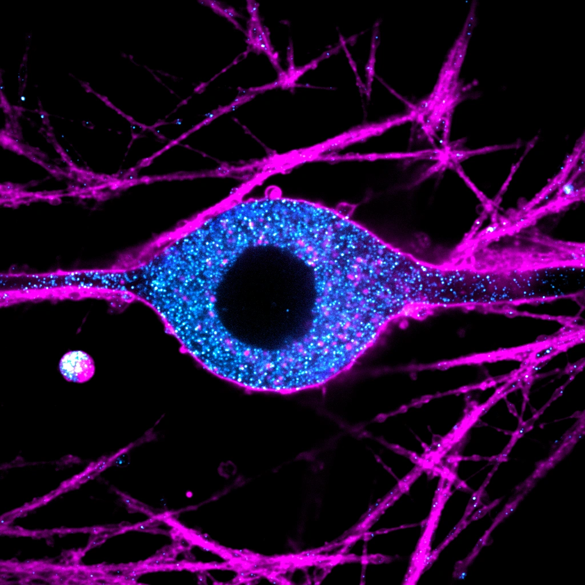
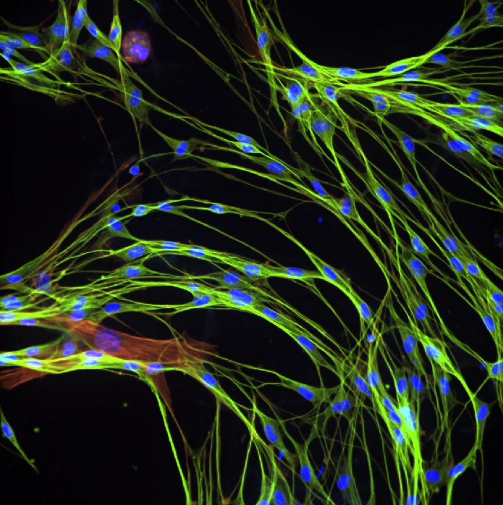
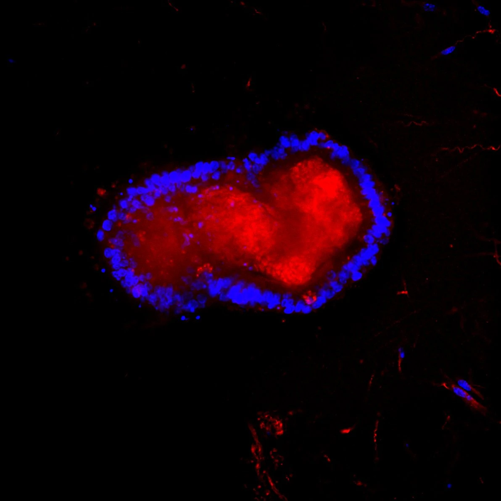

01 / Ways to support
Train emerging scientists
Talk with us about supporting hands-on research training and opportunities for students.
Neuroscience · Electrophysiology · Translational
What does the neuron say — let's find out!
We study neuronal activity across health and disease, from single-channel currents to whole-organism behavior.
About the lab
At a glance
Replace these with real numbers once you're ready.
Research programs
Every project in the lab reads out the electrical language of cells.
Explore microscopy from our lab, then discover the models and measurements behind our cystic fibrosis and CFTR-modulator research.
Inside our flagship program
What changes when we connect the models? Explore the cultures and measurements behind our research into CF and its treatments.
Explore the models


01 / The starting point
From individual cells to three-dimensional organoids, each preparation gives us a different window into cystic fibrosis.
Select a specimen to meet the models behind the work.
Current cultures & preparationsPrimary cultures, stem-cell-derived models and tissue preparations offer complementary views.
The question across every model
Compare cystic fibrosis with wild-type controls and explore treatment conditions across the research models.
01 / Compare models
02 / Compare conditions
Study design · No experimental results shown
Our cultures include human stem cells; DRG, SCG, enteric and hippocampal neurons; intestinal organoids; human-stem-cell-derived brain organoids; and smooth muscle. Intestinal organ-bath work provides a separate tissue preparation.
We combine DRG neurons, enteric neurons and intestinal organoids in co-culture to study relationships between these components.
Electrical recordings, smooth muscle contraction and intestinal organ-bath studies provide complementary measurements of function.
Planned brain studies will explore potential mechanisms relevant to reported neuropsychiatric symptoms during CFTR-modulator treatment.
We plan to differentiate human stem cells into neuronal and cardiac muscle cultures, and to develop a future SCG–cardiac muscle co-culture.
Across these models, our research aims to compare cystic fibrosis with wild-type controls and investigate responses across treatment conditions, including Trikafta (ETI) and Alyftrek (VTD).
ETI combines elexacaftor, tezacaftor and ivacaftor (Trikafta). VTD combines vanzacaftor, tezacaftor and deutivacaftor (Alyftrek).
Current U.S. prescribing information describes postmarketing neuropsychiatric reports in people taking these treatments or drugs with the same or similar active ingredients. These reports motivate questions; they do not establish the cellular mechanism being investigated here. The brain research shown above is a planned direction.
Trikafta prescribing information ↗Alyftrek prescribing information ↗
From models to measurements
Explore the techniques we use to record activity, image connections and measure function.
Techniques & capabilities
We keep a broad methodological toolkit under one roof.
The people
Curious, collaborative, and hands-on.
Selected publications
A placeholder list.
Recognition
Twice recognised in the USask Research Image Contest.
Gallery
Microscopy, rigs, and the day-to-day of the lab.
Support discovery
Help advance our cystic fibrosis and CFTR-modulator research through training, experimental resources and the next generation of connected models.
01 / Ways to support
Talk with us about supporting hands-on research training and opportunities for students.
02 / Ways to support
Discuss the experimental resources and tools needed to investigate neuronal activity.
03 / Ways to support
Explore opportunities to support the next questions in our CF and CFTR modulator research.
Interested in contributing? Contact us to discuss the lab’s research priorities and ways to help.
Contact
Questions about our research, collaborations, joining the lab, or supporting our work? We'd love to hear from you.
University of Saskatchewan
College of Medicine, Saskatoon.